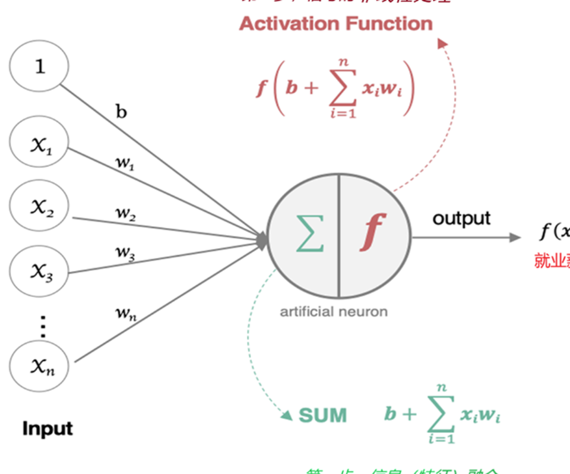
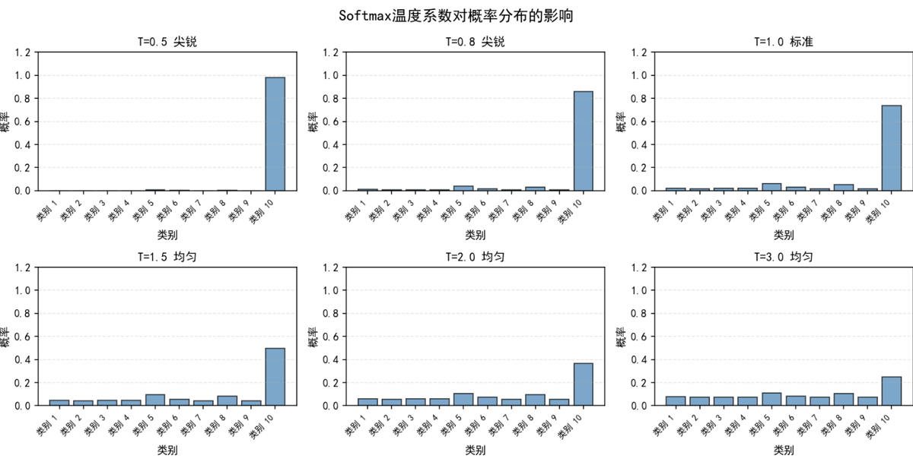
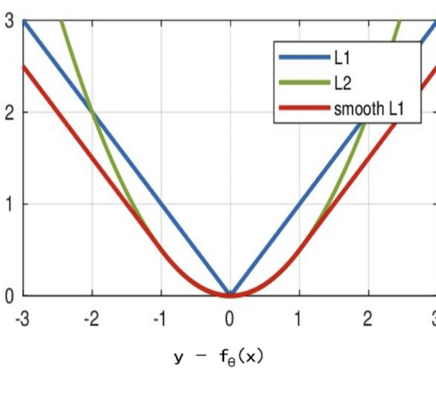
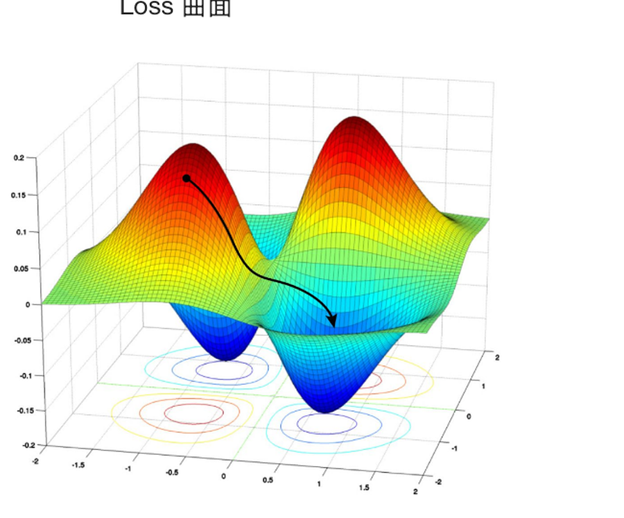
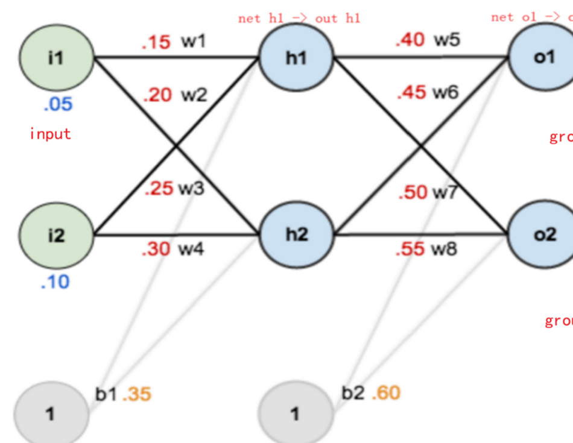
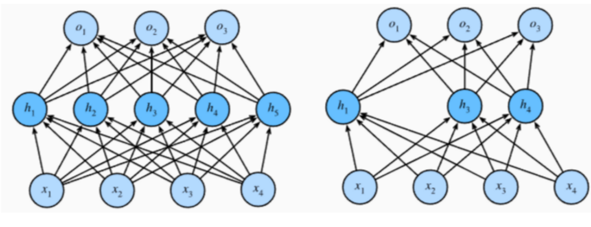
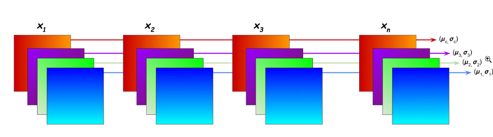

这一讲要建立的不是一堆零散 API，而是一条完整因果链：神经元完成“加权求和 + 非线性变换”，多层神经元组成网络；损失函数把预测误差变成一个标量；反向传播用链式法则求梯度；优化器和学习率决定参数怎样更新；初始化、正则化与归一化共同决定训练是否稳定、模型能否泛化。
学完后，你应该能独立回答这些问题：
- 为什么没有激活函数的多层全连接网络仍然只是线性模型？
- 二分类、多分类、多标签和回归任务的输出层与损失函数应如何配对？
- Xavier、Kaiming 初始化分别适合什么激活函数？
loss.backward()如何借助链式法则把误差信号传到每一层？- SGD、Momentum、AdaGrad、RMSProp、Adam 的状态变量分别记录了什么？
- Dropout、BatchNorm、
model.eval()和torch.no_grad()之间有什么关系？ - 怎样完成从 CSV 数据到模型训练、保存、加载和评估的完整闭环？
一、从一个人工神经元到多层网络
1. 神经元的两步计算
生物神经元用树突接收信号、胞体整合信号、轴突传递信号，突触会增强或抑制来自不同来源的信息。人工神经元保留了这个最核心的抽象：
$$ z = \sum_{i=1}^{n} w_i x_i + b, \qquad a = f(z) $$
- $x_i$：输入特征；
- $w_i$：可学习权重，表示对应特征对当前神经元的重要程度；
- $b$：可学习偏置，平移神经元的触发位置；
- $z$：加权求和得到的线性输出，也常称 pre-activation；
- $a=f(z)$：经过激活函数后的激活值，会传给下一层。

反向传播时，既会遇到 $\partial L/\partial a$，也会遇到 $\partial L/\partial z$。把 $z$ 和 $a$ 分清，后面的链式法则就不会乱。
2. 为什么必须有非线性
假设两层网络都没有激活函数：
$$ h=W_1x+b_1, \qquad y=W_2h+b_2 $$
代入后得到：
$$ y=(W_2W_1)x+(W_2b_1+b_2)=W'x+b' $$
无论叠多少个线性层，最终都可以合并成一个线性变换，因此无法学习弯曲的决策边界。激活函数让不同区域采用不同的响应方式，使深层网络能够逼近复杂的非线性映射。
3. 输入层、隐藏层和输出层
- 输入层：承载原始特征，本身通常不做可学习计算；输入特征数决定第一层的
in_features。 - 隐藏层：逐层组合低阶特征，形成更抽象的表示。神经元数量称为该层的宽度，隐藏层数量体现网络的深度。
- 输出层：其宽度和任务有关，例如四分类通常输出 4 个分数，单目标回归通常输出 1 个连续值。
同一层神经元之间通常不直接相连；若下一层的每个神经元都连接上一层的全部神经元，就称为全连接层。对批量输入，形状沿网络传播：
$$ [N,d_{in}] \rightarrow [N,d_1] \rightarrow [N,d_2] \rightarrow [N,d_{out}] $$
其中 $N$ 是批量大小。宽网络可以在同一层学习更多模式，深网络可以逐层复用和组合表示；两者都会提高表达能力，也会增加计算量、过拟合风险和调参难度。
4. 前向传播与反向传播
- 前向传播：数据从输入层流向输出层，产生预测并计算损失。
- 反向传播：损失的梯度从输出端反向流动，告诉每个参数“怎样改变才能让损失下降”。
神经网络的优势是能拟合复杂关系、可用统一框架端到端训练，在数据充足时往往有很强的预测能力；局限是可解释性弱、计算和数据成本高、超参数多，并且小数据上很容易过拟合。它不是所有表格任务的默认最优答案。
二、激活函数：给网络加入非线性
1. Sigmoid
$$ \sigma(x)=\frac{1}{1+e^{-x}}, \qquad \sigma'(x)=\sigma(x)(1-\sigma(x)) $$
值域为 $(0,1)$，适合把一个输出解释成二分类或多标签任务中的独立概率。它的导数最大只有 $0.25$，当 $|x|$ 较大时进入饱和区，梯度接近 0；输出也不是以 0 为中心。因此深层隐藏层一般不优先使用 Sigmoid。
2. Tanh
$$ \tanh(x)=\frac{1-e^{-2x}}{1+e^{-2x}}, \qquad \tanh'(x)=1-\tanh^2(x) $$
值域为 $(-1,1)$，以 0 为中心，原点附近的最大导数为 1；但 $|x|$ 较大时仍会饱和并产生梯度消失。它可用于需要有界、正负对称状态的隐藏表示。
3. ReLU 及其变体
$$ \operatorname{ReLU}(x)=\max(0,x) $$
当 $x>0$ 时导数为 1，当 $x<0$ 时导数为 0；$x=0$ 处不可导，框架会采用约定的次梯度。ReLU 计算简单、正半轴不饱和、输出稀疏，是全连接和卷积网络常用的默认选择。
如果某个神经元长期落在负半轴，梯度始终为 0，就可能成为“死亡 ReLU”。常见变体为：
$$ \operatorname{LeakyReLU}(x)=\max(\alpha x,x) $$
LeakyReLU：负半轴保留固定小斜率 $\alpha$；PReLU：负半轴斜率可学习；RReLU：训练时从一个区间随机采样负半轴斜率。
4. 用自动微分观察导数
非标量张量不能在没有上游梯度的情况下直接隐式反传，绘图前先求和，把输出变成标量：
import torch x = torch.linspace(-6, 6, 200, requires_grad=True) y = torch.sigmoid(x) y.sum().backward() sigmoid_value = y.detach() sigmoid_grad = x.grad.detach() print(sigmoid_grad.max().item()) # 接近 0.25
5. Softmax：把一组 logits 变成分布
对一组原始分数 $z$，Softmax 定义为：
$$ p_i=\frac{e^{z_i}}{\sum_j e^{z_j}}, \qquad \sum_i p_i=1 $$
实现时应先减去最大值以避免指数溢出；PyTorch 已在内部做稳定处理。dim 指定“在哪个轴上让概率和为 1”，分类输出 [batch, classes] 通常使用 dim=1 或 dim=-1。
加入温度 $\tau$ 后：
$$ p_i=\operatorname{softmax}(z_i/\tau) $$
- $\tau<1$：差距被放大，分布更尖锐；
- $\tau=1$：标准 Softmax；
- $\tau>1$：差距被压缩，分布更平坦。

import torch logits = torch.tensor([[1.2, 0.4, -0.3]]) for temperature in (0.5, 1.0, 2.0): probabilities = torch.softmax(logits / temperature, dim=-1) print(temperature, probabilities, probabilities.sum(dim=-1))
6. 输出层与损失函数的正确配对
| 任务 | 模型直接输出 | 训练损失 | 推理时转概率 |
|---|---|---|---|
| 二分类 | 1 个 raw logit | BCEWithLogitsLoss |
sigmoid(logit) |
| 多分类（互斥） | C 个 raw logits |
CrossEntropyLoss |
softmax(logits, dim=1) |
| 多标签（互不排斥） | 每类 1 个 raw logit | BCEWithLogitsLoss |
对每类做 sigmoid |
| 回归 | 连续值 | MSELoss / L1Loss / SmoothL1Loss |
通常无需激活 |
最重要的规则是：训练时不要在 CrossEntropyLoss 前手动做 Softmax，也不要在 BCEWithLogitsLoss 前手动做 Sigmoid。 这两个损失已经把激活与对数计算融合在一起，直接接收 raw logits 更稳定。
三、参数初始化：让信号和梯度稳定传播
1. 初始化到底在解决什么
如果同一层所有权重都相同，神经元会得到相同输出和相同梯度，更新后仍然相同，无法学习不同特征，这叫对称性无法打破。因此权重通常随机初始化，偏置则可以初始化为 0。
- 权重过大：$z$ 过大，Sigmoid/Tanh 容易饱和，梯度消失；深层网络还可能梯度爆炸。
- 权重过小：每层都缩小信号，激活值和梯度逐层衰减。
- 理想目标：前向激活和反向梯度的方差不要随层数剧烈改变。
2. Xavier / Glorot 初始化
Xavier 同时考虑输入与输出宽度，适合 Tanh、Sigmoid 或近似对称的激活：
$$ \operatorname{Var}(w)\approx\frac{2}{fan_{in}+fan_{out}} $$
标准形式包括：
$$ w\sim\mathcal N\left(0,\frac{2}{fan_{in}+fan_{out}}\right) $$
或
$$ w\sim U\left[-\sqrt{\frac{6}{fan_{in}+fan_{out}}},\sqrt{\frac{6}{fan_{in}+fan_{out}}}\right] $$
3. Kaiming / He 初始化
ReLU 会截断负半轴，Kaiming 初始化据此补偿方差：
$$ \operatorname{Var}(w)\approx\frac{2}{fan_{in}} $$
ReLU 对应的正态标准差约为 $\sqrt{2/fan_{in}}$，均匀分布边界约为 $\sqrt{6/fan_{in}}$。LeakyReLU 还应把负半轴斜率传给初始化函数。
4. PyTorch 初始化 API
import torch.nn as nn def init_weights(module): if isinstance(module, nn.Linear): nn.init.kaiming_normal_(module.weight, nonlinearity="relu") nn.init.zeros_(module.bias) model = nn.Sequential( nn.Linear(20, 128), nn.ReLU(), nn.Linear(128, 4), ) model.apply(init_weights)
nn.init 还提供 uniform_、normal_、zeros_、ones_、constant_、xavier_uniform_、xavier_normal_ 和 kaiming_uniform_。固定成同一个常数只适合偏置或调试，不适合隐藏层权重。PyTorch 的层本身已有合理默认初始化，只有明确知道目的时才需要手动覆盖。
四、用 nn.Module 搭建网络并计算参数量
1. __init__ 定义模块，forward 定义数据流
import torch import torch.nn as nn class DemoNet(nn.Module): def __init__(self): super().__init__() self.hidden1 = nn.Linear(3, 3) self.hidden2 = nn.Linear(3, 2) self.output = nn.Linear(2, 2) nn.init.xavier_normal_(self.hidden1.weight) nn.init.kaiming_normal_(self.hidden2.weight, nonlinearity="relu") def forward(self, x): x = torch.sigmoid(self.hidden1(x)) x = torch.relu(self.hidden2(x)) return self.output(x) # raw logits model = DemoNet() x = torch.randn(5, 3) logits = model(x) # 调用 __call__，不要直接调用 forward print(logits.shape) # torch.Size([5, 2])
model(x) 不只是调用 forward，还会正确触发钩子和框架逻辑，因此不应写 model.forward(x)。简单顺序网络也可以写成 nn.Sequential。
2. 矩阵方向与参数量
nn.Linear(in_features, out_features) 的权重形状为 [out_features, in_features]，前向计算为：
$$ Y=XW^T+b $$
单个线性层参数量为：
$$ in_features\times out_features+out_features =(in_features+1)\times out_features $$
上面的 3→3→2→2 网络共有：
$$ (3+1)\times3+(3+1)\times2+(2+1)\times2=12+8+6=26 $$
for name, parameter in model.named_parameters(): print(name, tuple(parameter.shape), parameter.requires_grad) trainable = sum(p.numel() for p in model.parameters() if p.requires_grad) print("trainable parameters:", trainable) print(model.state_dict().keys())
输入特征属于数据，不是模型参数；权重和偏置才是优化器更新的参数。把某个参数的 requires_grad 设为 False 可以冻结它。
需要更完整的层级、输出形状和参数统计时，可以额外使用 torchinfo.summary 或课程中演示的 torchsummary.summary；它们是检查工具，不参与模型训练。
五、损失函数：把“预测得好不好”变成标量
损失函数也称 objective、criterion 或 cost。优化器不会理解“分类正确”这样的语义，它只接收损失对参数的梯度。
1. 多分类交叉熵
对 one-hot 标签 $y$ 和预测概率 $p$：
$$ L=-\sum_{i=1}^{C}y_i\log p_i $$
硬标签只有真实类别位置为 1，因此单样本损失就是 $-\log p_{true}$。真实类别概率越接近 1，损失越小。
import torch import torch.nn as nn logits = torch.tensor([[2.0, 0.3, -1.0], [0.2, 1.4, 0.1]]) targets = torch.tensor([0, 1], dtype=torch.long) criterion = nn.CrossEntropyLoss(label_smoothing=0.1) loss = criterion(logits, targets) print(loss.item())
CrossEntropyLoss 内部完成稳定的 log_softmax + NLLLoss，硬标签应是 LongTensor 类别下标。浮点型、形状与 logits 相同的软标签也受支持，但普通硬分类优先使用类别下标。
标签平滑把“真实类为 1、其他类为 0”的尖锐标签变得稍软，可降低过度自信并改善泛化；它不是随意篡改标签，也不能代替数据清洗。
2. 二元交叉熵
$$ L=-\left[y\log p+(1-y)\log(1-p)\right] $$
BCELoss 接收已经经过 Sigmoid 的概率；更推荐数值稳定的 BCEWithLogitsLoss，它直接接收 logits。目标值应为浮点数，并与输出形状一致。多标签分类就是对每个类别独立计算 BCE。
logits = torch.tensor([[1.2], [-0.4], [0.7]]) targets = torch.tensor([[1.0], [0.0], [1.0]]) loss = nn.BCEWithLogitsLoss()(logits, targets) probabilities = torch.sigmoid(logits)
3. 回归损失
- MAE / L1：$\frac1N\sum|\hat y-y|$。对离群值更稳健，但 0 点不可导，附近梯度不随误差变小。
- MSE / L2 loss：$\frac1N\sum(\hat y-y)^2$。平滑，强烈惩罚大误差，但对离群值敏感。
- Smooth L1 / Huber：小误差区间使用二次函数，远离 0 后转为线性函数，兼顾平滑与稳健。

当 beta=1 时，PyTorch 的 Smooth L1 为：
$$ L(x)= \begin{cases} \frac12x^2,& |x|<1\ |x|-\frac12,& |x|\ge1 \end{cases} $$
pred = torch.tensor([2.0, 5.0, 12.0]) target = torch.tensor([3.0, 5.0, 7.0]) print(nn.L1Loss()(pred, target)) print(nn.MSELoss()(pred, target)) print(nn.SmoothL1Loss(beta=1.0)(pred, target))
这里的 L1/L2 是预测误差损失；后面用于限制权重大小的 L1/L2 正则项是另一件事。
六、梯度下降、批量与学习率
最基本的参数更新为：
$$ w_{t+1}=w_t-\eta\nabla_wL(w_t) $$
$\eta$ 是学习率。学习率太小，收敛缓慢；太大，会跨过低谷来回震荡；极端时损失不断增大甚至出现 inf、nan。

1. 三种梯度下降
| 方式 | 每次更新使用的数据 | 特点 |
|---|---|---|
| Batch GD | 全部训练样本 | 梯度稳定，但单步计算和内存成本高 |
| SGD | 1 个样本 | 更新频繁、噪声大，轨迹震荡 |
| Mini-batch GD | 一小批样本 | 并行效率与梯度稳定性的折中，实际最常用 |
2. Epoch、batch 和 iteration
- Epoch：完整遍历一次训练集。
- Batch size：一次前向与反向传播使用的样本数。
- Iteration / step：优化器更新一次参数。
当样本数为 $N$、批量大小为 $B$ 时：
$$ steps_per_epoch= \begin{cases} \lceil N/B\rceil,& drop_last=False\ \lfloor N/B\rfloor,& drop_last=True \end{cases} $$
七、反向传播：链式法则如何穿过网络
1. 从一个权重看链式法则
课件中的示例网络使用：输入 $i_1=0.05,i_2=0.10$，权重 $w_1\sim w_8$ 分别为 $0.15,0.20,\ldots,0.55$，隐藏层偏置 $b_1=0.35$，输出层偏置 $b_2=0.60$，目标为 $0.01$ 与 $0.99$。

前向计算得到：
$$ out_{h1}=0.593269992,\quad out_{h2}=0.596884378 $$
$$ out_{o1}=0.751365070,\quad out_{o2}=0.772928465 $$
以平方误差为例，总损失约为 $0.298371109$。求 $w_5$ 的梯度时，把它对损失的影响拆成三段：
$$ \frac{\partial E}{\partial w_5} =\frac{\partial E}{\partial out_{o1}} \frac{\partial out_{o1}}{\partial net_{o1}} \frac{\partial net_{o1}}{\partial w_5} $$
代入数值：
$$ 0.741365070\times0.186815602\times0.593269992 =0.082167041 $$
更新时执行 $w_5\leftarrow w_5-\eta\times0.082167041$。更靠前的权重会通过多条路径影响多个后续神经元，因此各路径的梯度贡献需要相加。
2. PyTorch 自动完成反向传播
import torch w = torch.tensor(0.4, requires_grad=True) x = torch.tensor(0.6) target = torch.tensor(0.9) prediction = torch.sigmoid(w * x) loss = 0.5 * (target - prediction).pow(2) loss.backward() print(w.grad)
自动微分省去了手算，但没有改变数学本质。训练循环里每次都要清梯度，是因为 PyTorch 默认把新梯度累加到 .grad。
八、从 EMA 到 Momentum、AdaGrad、RMSProp 和 Adam
普通梯度下降可能在狭长谷底左右震荡，在平坦区域移动很慢，也会遇到鞍点和局部极小值。优化器通过保存历史状态来调整方向或步长，但任何常见优化器都不保证找到非凸神经网络的全局最优解。
1. 指数移动平均 EMA
$$ S_t=\beta S_{t-1}+(1-\beta)Y_t $$
$\beta$ 越大，历史记忆越长、曲线越平滑，但响应也越慢。由于 $S_0=0$，训练早期估计会偏向 0，这正是 Adam 需要偏差校正的原因。
2. Momentum
概念上可以对梯度做 EMA；PyTorch 的经典 SGD Momentum 采用等价但缩放不同的写法：
$$ v_t=\mu v_{t-1}+g_t,\qquad w_t=w_{t-1}-\eta v_t $$
它保留历史前进方向，可减少狭长谷底的横向震荡，并借助惯性穿过短暂的平坦区或鞍点附近。梯度在等高线的法向方向上变化最快，Momentum 的历史方向能抑制两侧法向分量反复翻转造成的震荡。
3. AdaGrad
$$ s_t=s_{t-1}+g_t^2,\qquad w_t=w_{t-1}-\frac{\eta}{\sqrt{s_t}+\varepsilon}g_t $$
每个参数拥有独立的有效学习率，历史梯度大的方向步长更小。缺点是 $s_t$ 单调增大，学习率可能过早衰减到几乎无法训练；当前梯度若为 0，这一步同样不会产生更新。
4. RMSProp
$$ s_t=\beta s_{t-1}+(1-\beta)g_t^2 $$
它用平方梯度的 EMA 代替无限累加，避免 AdaGrad 的分母只增不减。基础 RMSProp 主要自适应缩放各参数步长，是否再使用 momentum 取决于配置。
5. Adam
Adam 同时维护梯度的一阶矩和二阶矩：
$$ m_t=\beta_1m_{t-1}+(1-\beta_1)g_t $$
$$ v_t=\beta_2v_{t-1}+(1-\beta_2)g_t^2 $$
对初始化为 0 带来的早期偏差做校正：
$$ \hat m_t=\frac{m_t}{1-\beta_1^t},\qquad \hat v_t=\frac{v_t}{1-\beta_2^t} $$
最后更新：
$$ w_t=w_{t-1}-\eta\frac{\hat m_t}{\sqrt{\hat v_t}+\varepsilon} $$
import torch.optim as optim sgd = optim.SGD(model.parameters(), lr=0.01, momentum=0.9) adagrad = optim.Adagrad(model.parameters(), lr=0.01) rmsprop = optim.RMSprop(model.parameters(), lr=0.001, alpha=0.99) adam = optim.Adam(model.parameters(), lr=0.001, betas=(0.9, 0.999))
Adam 是稳健起点，不代表总是优于 SGD；最终效果还取决于数据、模型、学习率、正则化和训练预算。
九、学习率调度：训练前期快走，后期细调
优化器会根据每个参数的历史梯度调整有效步长，学习率调度器则改变全局基础学习率，两者可以同时使用。
1. 常见调度器
StepLR：每隔固定 epoch 乘以gamma；MultiStepLR：在指定里程碑衰减；ExponentialLR：每个 epoch 都乘以gamma；CosineAnnealingLR：按余弦曲线平滑下降；- Warmup：训练最初从较小学习率逐渐升高，减少刚开始时的不稳定；
- Restart：周期性拉高学习率，尝试离开当前区域。
import torch.optim as optim optimizer = optim.Adam(model.parameters(), lr=1e-3) scheduler = optim.lr_scheduler.CosineAnnealingLR( optimizer, T_max=20, eta_min=1e-5, ) for epoch in range(20): for features, labels in train_loader: optimizer.zero_grad() loss = criterion(model(features), labels) loss.backward() optimizer.step() scheduler.step() # 通常每个 epoch、所有 optimizer.step() 之后调用 print(epoch, scheduler.get_last_lr()[0])
训练恢复时要同时恢复模型、优化器和调度器的 state_dict，否则学习率阶段会错位。某些按 batch 调度的策略调用频率不同，应以对应调度器约定为准。
十、正则化：控制过拟合、提升泛化
训练误差很低而验证误差明显更高，通常说明过拟合。常用策略包括减少模型容量、增加数据、早停、权重惩罚、Dropout 和归一化。
1. L1 与 L2 权重正则化
在原任务损失后加入参数惩罚：
$$ L_{total}=L_{task}+\lambda\sum|w| $$
或
$$ L_{total}=L_{task}+\lambda\sum w^2 $$
L1 倾向产生稀疏权重；L2 倾向平滑地压小权重。优化器中的 weight_decay 常用于实现 L2 风格的权重衰减；AdamW 将权重衰减与 Adam 的梯度自适应解耦，通常比直接在 Adam 中混入 L2 更清晰。
optimizer = optim.AdamW(model.parameters(), lr=1e-3, weight_decay=1e-4)
2. Dropout
训练时，每个激活以概率 $p$ 置 0，保留下来的激活乘以 $1/(1-p)$，使期望尺度基本不变。这等价于每次训练一个不同的子网络，可减少神经元之间的路径依赖和共同适应。

class RegularizedNet(nn.Module): def __init__(self): super().__init__() self.layers = nn.Sequential( nn.Linear(20, 128), nn.ReLU(), nn.Dropout(p=0.3), nn.Linear(128, 4), ) def forward(self, x): return self.layers(x)
评估模式下 Dropout 自动关闭。Dropout 是人为随机屏蔽激活；死亡 ReLU 是负半轴长期没有梯度，两者不要混淆。
十一、BatchNorm：批内标准化，再学习缩放和平移
1. 训练时的四步
对一个 mini-batch 中的某个特征或通道，BatchNorm 先计算均值与方差：
$$ \mu_B=\frac1m\sum_{i=1}^m x_i,qquad \sigma_B^2=\frac1m\sum_{i=1}^m(x_i-\mu_B)^2 $$
再标准化并重构：
$$ \hat x_i=\frac{x_i-\mu_B}{\sqrt{\sigma_B^2+\varepsilon}},qquad y_i=\gamma\hat x_i+\beta $$
$\gamma$ 和 $\beta$ 是可学习参数，所以 BatchNorm 不会强迫最终输出永久保持均值 0、方差 1，而是让模型在稳定标准化基础上重新选择合适尺度与偏移。
课件用“内部特征分布不断变化”解释 BatchNorm 的动机；现代研究通常认为它的有效性不只来自降低所谓内部协变量偏移，也与改善损失面的平滑性和优化条件有关。
2. 全连接与图像中的统计维度
BatchNorm1d(F)接收常见形状[N, F]，对每一列特征在批量维度上统计。BatchNorm2d(C)接收[N, C, H, W]，对每个通道分别在N、H、W维度上统计。

常见顺序是 Linear/Conv → BatchNorm → 激活函数，但具体架构可能使用不同的归一化位置。
import torch import torch.nn as nn x = torch.randn(8, 3, 16, 16) # [N, C, H, W] bn = nn.BatchNorm2d( 3, eps=1e-5, momentum=0.1, affine=True, ) y = bn(x) print(y.shape) print(bn.weight.shape, bn.bias.shape) print(bn.running_mean, bn.running_var)
训练时，BatchNorm 还会更新 running_mean 和 running_var。PyTorch 的 momentum=0.1 表示新批次统计量的权重约为 0.1，这与某些教材里把 $\beta$ 定义为“历史权重”的写法方向相反。
3. 推理时为什么用运行统计量
推理可能一次只有一个样本，无法可靠估计批量均值和方差；因此评估模式使用训练期间积累的运行统计量，并继续使用学到的 $\gamma、\beta$。
除 BatchNorm 外，还常见：
LayerNorm：在单个样本的特征维度上归一化，Transformer 中常用；InstanceNorm：按单个样本、单个通道归一化，常见于风格迁移；GroupNorm：把通道分组统计，对小 batch 更稳定。
十二、train()、eval() 与 no_grad() 不可互相替代
| 操作 | Dropout | BatchNorm | 是否记录计算图 |
|---|---|---|---|
model.train() |
随机丢弃 | 使用当前批统计并更新运行统计 | 记录 |
model.eval() |
关闭 | 使用运行统计 | 仍然记录 |
torch.no_grad() |
不改变模式 | 不改变模式 | 不记录 |
torch.inference_mode() |
不改变模式 | 不改变模式 | 更彻底地关闭训练期跟踪 |
因此标准推理写法需要同时完成两件事：
model.eval() with torch.inference_mode(): logits = model(features) predictions = logits.argmax(dim=1)
model.eval() 只切换具有训练/评估差异的层，不会自动关闭梯度；no_grad() 只关闭图记录，不会自动关闭 Dropout 或切换 BatchNorm 统计量。
十三、训练闭环与“2244”记忆法
完整监督学习训练可以记成：
- 2 个对象：
Dataset、DataLoader； - 2 层循环：epoch 循环、batch 循环；
- 4 个定义：模型、损失函数、学习率、优化器；
- 4 个动作：清梯度、前向与算损失、反向传播、更新参数。
for epoch in range(num_epochs): model.train() loss_sum = 0.0 sample_count = 0 for features, labels in train_loader: features = features.to(device) labels = labels.to(device) optimizer.zero_grad(set_to_none=True) logits = model(features) loss = criterion(logits, labels) loss.backward() optimizer.step() batch_size = features.size(0) loss_sum += loss.item() * batch_size sample_count += batch_size epoch_loss = loss_sum / sample_count print(f"epoch={epoch + 1}, loss={epoch_loss:.4f}")
按样本数加权汇总损失，比“每批损失直接取平均”更严谨，因为最后一个 batch 可能更小。若使用按 epoch 调度的学习率，再在 epoch 末调用 scheduler.step()。
十四、实战：用全连接网络预测手机价格区间
1. 任务与数据
配套 CSV 共 2000 条样本、20 个输入特征，标签 price_range 为 0、1、2、3 四个互斥价格区间，因此这是四分类问题，不是预测具体价格的回归问题。
特征包括电池容量、蓝牙、处理器速度、双卡、摄像头像素、内存、重量、屏幕尺寸、通话时间、网络与触屏能力等。完整流程为：
- 读取表格并拆分特征、标签；
- 先划分训练集与测试集；
- 只在训练集上拟合标准化器，避免数据泄漏；
- 构建 20→128→256→4 的全连接网络；
- 用 raw logits 与交叉熵训练；
- 保存
state_dict，重新加载并评估准确率。
2. 可运行的完整版本
把配套 CSV 放到 data/phone_price.csv：
from pathlib import Path import numpy as np import pandas as pd import torch import torch.nn as nn from sklearn.model_selection import train_test_split from sklearn.preprocessing import StandardScaler from torch.utils.data import DataLoader, TensorDataset SEED = 42 torch.manual_seed(SEED) np.random.seed(SEED) device = torch.device("cuda" if torch.cuda.is_available() else "cpu") class PhonePriceNet(nn.Module): def __init__(self, feature_count, class_count): super().__init__() self.network = nn.Sequential( nn.Linear(feature_count, 128), nn.ReLU(), nn.Linear(128, 256), nn.ReLU(), nn.Linear(256, class_count), ) def forward(self, x): return self.network(x) # raw logits def make_loaders(csv_path, batch_size=32): frame = pd.read_csv(csv_path) x = frame.drop(columns="price_range").to_numpy(dtype=np.float32) y = frame["price_range"].to_numpy(dtype=np.int64) x_train, x_test, y_train, y_test = train_test_split( x, y, test_size=0.2, random_state=SEED, shuffle=True, stratify=y, ) scaler = StandardScaler() x_train = scaler.fit_transform(x_train).astype(np.float32) x_test = scaler.transform(x_test).astype(np.float32) train_set = TensorDataset( torch.from_numpy(x_train), torch.from_numpy(y_train), ) test_set = TensorDataset( torch.from_numpy(x_test), torch.from_numpy(y_test), ) train_loader = DataLoader( train_set, batch_size=batch_size, shuffle=True, ) test_loader = DataLoader( test_set, batch_size=256, shuffle=False, ) return train_loader, test_loader, x.shape[1], np.unique(y).size def train_model(model, train_loader, epochs=50): criterion = nn.CrossEntropyLoss(label_smoothing=0.05) optimizer = torch.optim.AdamW( model.parameters(), lr=1e-3, weight_decay=1e-4, ) for epoch in range(epochs): model.train() loss_sum = 0.0 sample_count = 0 for features, labels in train_loader: features = features.to(device) labels = labels.to(device) optimizer.zero_grad(set_to_none=True) logits = model(features) loss = criterion(logits, labels) loss.backward() optimizer.step() batch_size = features.size(0) loss_sum += loss.item() * batch_size sample_count += batch_size if (epoch + 1) % 10 == 0: print( f"epoch={epoch + 1:02d}, " f"loss={loss_sum / sample_count:.4f}" ) def evaluate(model, data_loader): model.eval() correct = 0 total = 0 with torch.inference_mode(): for features, labels in data_loader: features = features.to(device) labels = labels.to(device) logits = model(features) predictions = logits.argmax(dim=1) correct += (predictions == labels).sum().item() total += labels.numel() return correct / total def main(): train_loader, test_loader, feature_count, class_count = make_loaders( "data/phone_price.csv" ) model = PhonePriceNet(feature_count, class_count).to(device) train_model(model, train_loader) save_path = Path("checkpoints/phone_price.pt") save_path.parent.mkdir(parents=True, exist_ok=True) torch.save(model.state_dict(), save_path) restored = PhonePriceNet(feature_count, class_count).to(device) state = torch.load(save_path, map_location=device, weights_only=True) restored.load_state_dict(state) accuracy = evaluate(restored, test_loader) print(f"test accuracy={accuracy:.4f}") if __name__ == "__main__": main()
课件中的一次基础训练得到测试准确率 0.64250，它只代表当次数据划分、初始化和超参数下的结果，不是固定保证值。上面的现代化版本已在配套 2000 条数据上实跑通过：固定随机种子 42 时，本机一次测试准确率为 0.9175；这个数字同样会受环境和随机性影响，不应视为保证值。可以依次尝试：标准化特征、改用 Adam/AdamW、调整学习率、增加训练轮数、改变层宽与层数、加入正则化，并留出验证集选择超参数。测试集只能用于最终评估，不能反复据此调参。
十五、训练不稳定时的排查顺序
1. 损失不下降
- 确认输出与损失函数是否匹配，尤其不要在交叉熵前加 Softmax；
- 检查标签类型和形状：多分类通常是
[N]的long； - 检查是否漏了
zero_grad → backward → step； - 检查学习率是否过大或过小；
- 打印参数梯度，确认不是全部为 0 或出现
nan； - 先让模型过拟合一个很小的数据子集，验证训练管线本身。
2. 训练好、验证差
- 排查训练/验证预处理是否一致以及数据泄漏；
- 减小网络容量或缩短训练时间；
- 使用 weight decay、Dropout、数据增强或早停；
- 增加有效数据，检查类别不平衡；
- 确认评估时已经
model.eval()。
3. 梯度消失或爆炸
- 检查激活函数是否长期处于饱和区；
- 使用与激活函数匹配的 Xavier/Kaiming 初始化；
- 使用归一化层、残差结构或梯度裁剪；
- 监控每层激活值与梯度范数，而不是只看总损失。
把这一讲压缩成一句话就是：网络结构决定能表达什么，损失函数定义要优化什么，反向传播计算往哪里改，优化器与学习率决定怎么改，初始化、归一化和正则化决定能否稳定地改并泛化到新数据。